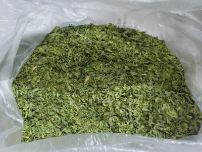
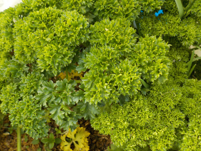
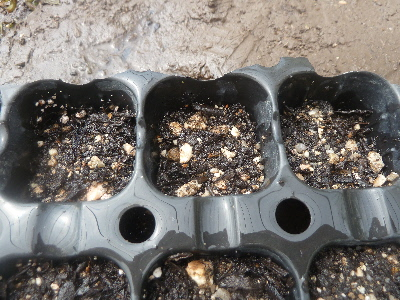
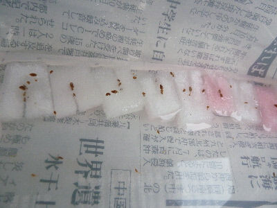
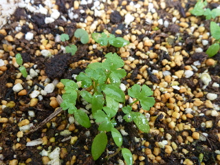
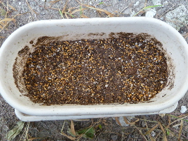
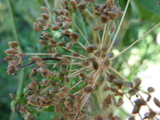
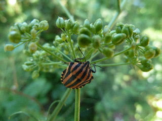
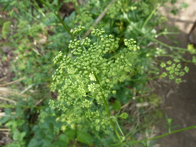

遊びで植物を育てよう
2019/05/19
ドライパセリを大量に作りました。
生のパセリを大量に食べれないので、乾燥させました。

たぶん市販の小瓶3個分はありそうです。
1年で使い切れるかな？。
あまり使い方を知らないので無理かな。
【パセリTOP】
【野菜TOP】
【園芸TOP】
2019/02/20
パセリが育っているので収穫です。
普通今の時期は寒くて育たないんだろうな。

暖冬なので大きくなってます。
この調子だと花が咲くころにはとっても巨大になっていそうな気がする。
【パセリTOP】
【野菜TOP】
【園芸TOP】
2018/06/10
パセリの種まきはあきらめました。
今年はパセリの種まきはあきらめました。

代わりにホームセンターでパセリの苗を買ってきました。
シーズン終了品で10円で販売していました。
10円はお買い得ですね。
ちゃんと育つかな？すぐ花が咲いて枯れないといいんですが。
【パセリTOP】
【野菜TOP】
【園芸TOP】
2018/05/12
パセリの種を再度蒔きました。
スポンジの種まきは失敗しました。
何が悪かったのかな？

こんどは土に蒔きました。
種が古くて芽が出ないんだったら、これも芽が出ないかな。
【パセリTOP】
【野菜TOP】
【園芸TOP】
2018/03/21
パセリの種をスポンジに蒔きました。
インターネットでスポンジで種まきする方法を見つけました。
なんか簡単そうなので挑戦です。

100均で買ったタッパーに、100均で買ったスポンジを入れて種まきです。
パセリはそんなに食べれないので苗は少し出来れば十分ですが、種が自家採取なのと、採取したのがずいぶん前なので大目に蒔きました。
これでどれくらい育つかな？
後、タッパーは乾燥しないようにしばらくの間は蓋をしてしておこうと思っています。
まだ寒いので水が腐ったりはしない気がする。
【パセリTOP】
【野菜TOP】
【園芸TOP】
2014/11/02
パセリがパセリっぽくなってきました。
最初雑草だか何の葉っぱだか分からなかったパセリですが、葉っぱが増えるとパセリっぽく見えてきました。

ギザギザが重要なんですね。
これから寒くなりますけど、大きくなるかな？
パセリは冷凍庫にいっぱい入っているので、春に育てばいいんですけどね。
【パセリTOP】
【野菜TOP】
【園芸TOP】
2014/10/09
パセリの芽なのかな？
パセリの種を蒔いたプランタですが、色んな種類の葉っぱが出て来ました。

どれがパセリかな？
全部雑草だったりして。
【パセリTOP】
【野菜TOP】
【園芸TOP】
2014/09/21
イタリアンパセリの種まきをしました。
近頃寒きなってきたので、芽がでるかな？

ホームセンターでは苗が売っているので、今から蒔いても大丈夫なのかな？なんて思いながらも種蒔きしました。
冬が来たら枯れちゃうのかな？
それまでに収穫できるのかな？なんてちょっと不安に思っています。
【パセリTOP】
【野菜TOP】
【園芸TOP】
2014/07/26
パセリの種を採りました。
茶色くなっているので、種が出来たかな。

春と秋が蒔き時のようなので、秋になったら蒔こうと思います。

パセリの種にはこの派手なカメムシがよくいます。
ちゃんといい種に育っているかな？
【パセリTOP】
【野菜TOP】
【園芸TOP】
2014/06/15
パセリの花が咲いています。
イタリアンパセリの花が沢山咲いています。

せっかく咲いているんだから何かに役立てたいな。
これってこの後、種とか採れるのかな？
花が小さいから種も小さいんだろうなー。
【パセリTOP】
【野菜TOP】
【園芸TOP】
買ったお弁当や総菜に付いてるパセリは食べないけど、自家栽培パセリは食べます。特に意味はないです。
【おいしいものを食べよう。】【たくさん寝よう。】
【ソロ活をしよう!】【季節感のあることをしよう。】【動画視聴はほどほどに。】【当サイトの全てのコンテンツは無断転載禁止です。】